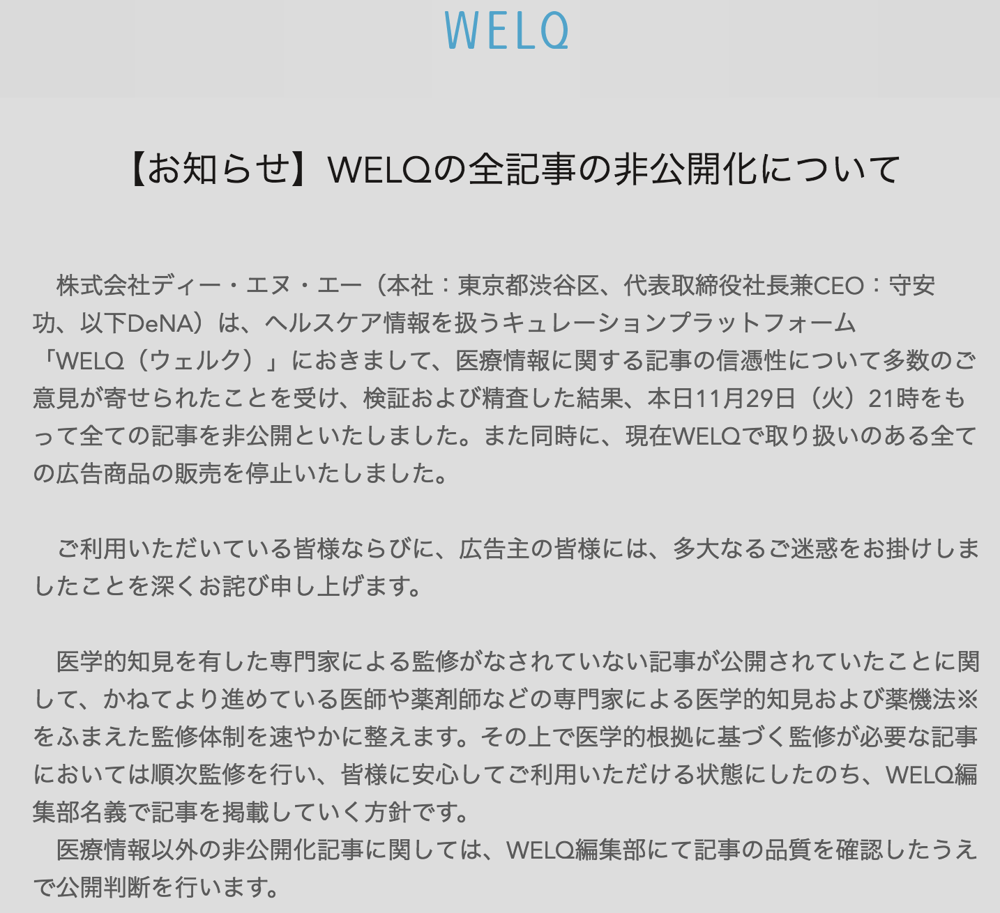

WELQについて一昨日触れましたが、どうやら一昨日のうちにWELQのサイト全般閉鎖されてしまったようですね。。
しかも本日になって、DeNA社が運営しているキュレーションメディア全般（MERYを除く約１０のキュレーションサイト）が一旦非公開となることが発表されたようです。DeNAさんには世論に抗って頑張っていただきたいところでしたが、こうも逆風が強くなるとプロ野球球団保有会社としても根本的な方策を取らざるをえなかったものと思われます。誠に残念です。
さて、このWELQというサービスにせっかく触れましたので、今回はキュレーションサービス全般について今後の可能性を論じてみたいと思います。話を分かりやすくするために、美容・健康のキュレーションサイトであるWELQと、ここ数年流行りのグルメ情報サイトであるRettyの共通点、相違点を題材に考察してみましょう。共通点、相違点ともにたくさんある気がしていますが、ここで私が注目しているポイントはそれぞれ下記の二点です。
（共通点）
どちらのサイトも、特定のユーザーが各人の持つ特定の興味、関心に応じて、他のユーザーにとって価値があると考えている情報をまとめ、伝えるという特徴を持っています。すなわち、一般的定義をすると、キュレーションサイトということができます。
（相違点）
WELQはニックネームベースで投稿されることが多く、投稿された情報の信憑性が一般に低く、当該記事に関する責任を実質的にキュレーターが負わない、もしくは負う必要がない仕組みになっています。一方で、Rettyは実名ベースでの投稿が基本であるため、投稿された情報の信憑性が高くなり、当該記事に関する責任の一部をキュレーターが負う仕組みになっています。
なぜでしょうか。
それは、嘘八百の情報やネガティブな情報ばかりを投稿するユーザーはそのような行動をするユーザーであると実社会においても評価されてしまい、そういった行動はそのユーザーにとってマイナスにしかなりえないからです。したがって、参加ユーザーが実名ベースとなるRettyのようなサービスでは、他のユーザーにとって真のメリットがもたらされるような信憑性の高い情報や、ポジティブな情報が投稿される傾向が高いのです。
今回の一連の騒動を見るに、歴史にタラレバは禁物ですが、WELQが実名ベースで運営されるキュレーションサイトであったならば、全く違う運命を辿ったのではないかと考えてしまいます。DeNAさんというIT業界の雄がつまづいておられる今、多くのベンチャー企業にとってはチャンス到来かもしれません。